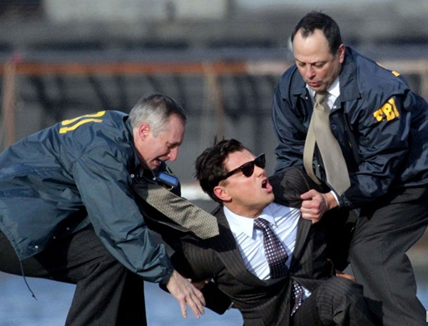
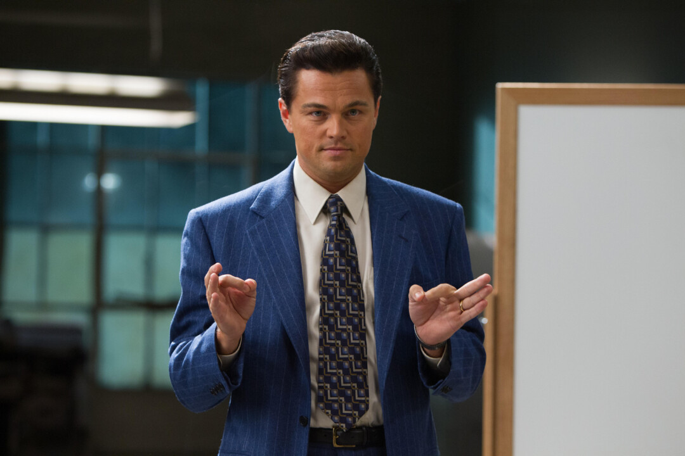
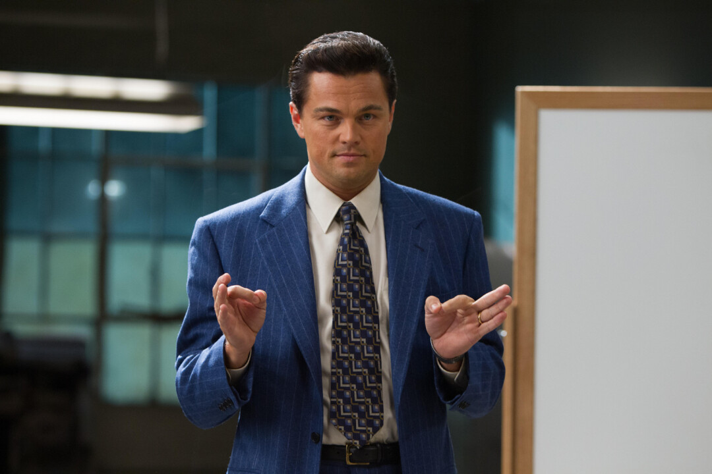
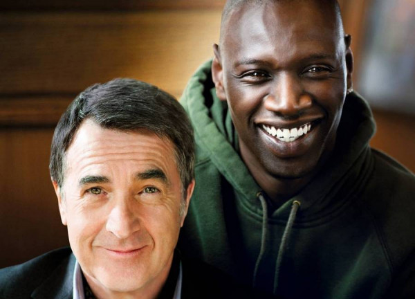
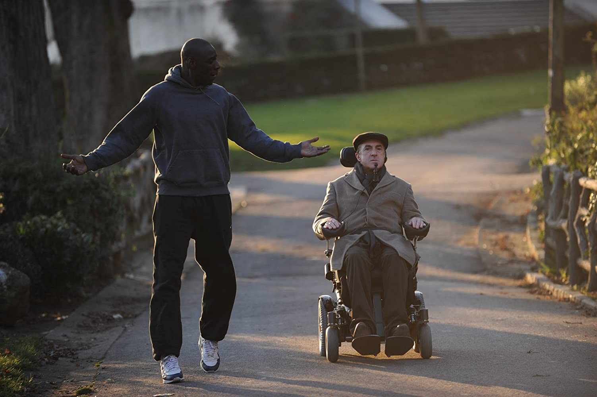
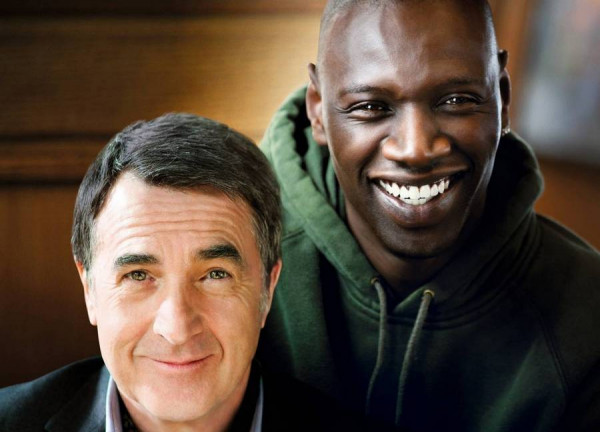
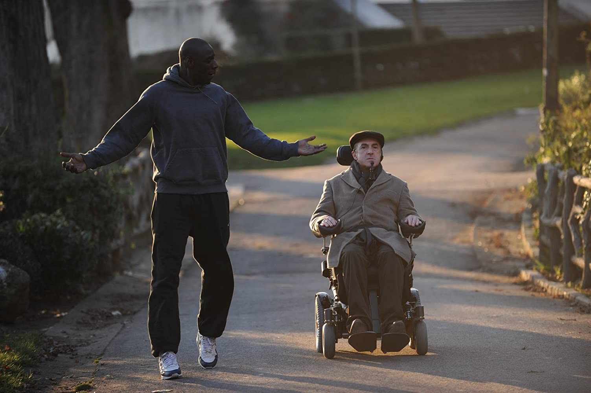

Волк с Уолл-Стрит
Год: |
2013 |
Страна: |
США |
Жанр: |
Драма, криминал, биография, комедия |
Режиссер: |
Мартин Скорсезе |
1987 год. Джордан Белфорт становится брокером в успешном инвестиционном банке. Вскоре банк закрывается после внезапного обвала индекса Доу-Джонса. По совету жены Терезы Джордан устраивается в небольшое заведение, занимающееся мелкими акциями. Его настойчивый стиль общения с клиентами и врождённая харизма быстро даёт свои плоды. Он знакомится с соседом по дому Донни, торговцем, который сразу находит общий язык с Джорданом и решает открыть с ним собственную фирму. В качестве сотрудников они нанимают нескольких друзей Белфорта, его отца Макса и называют компанию «Стрэттон Оукмонт». В свободное от работы время Джордан прожигает жизнь: лавирует от одной вечеринки к другой, вступает в сексуальные отношения с проститутками, употребляет множество наркотических препаратов, в том числе кокаин и кваалюд. Однажды наступает момент, когда быстрым обогащением Белфорта начинает интересоваться агент ФБР.
 

 


